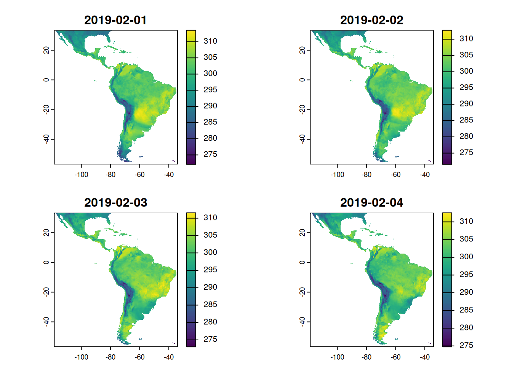

Introduction
The ERA5-Land reanalysis from The Copernicus Programme is an incredible source of climate data with global coverage of land areas from 1950 to the present, at 10km spatial resolution. Its original data is at hourly interval, and monthly aggregates are also available at the Copernicus Data Store (CDS).
For some applications like Climate-Sensitive Diseases (CSD) modelling, the hourly interval may be too much detailed, but the monthly aggregation is too coarse.
For this reason, I created daily aggregates from some ERA5-Land indicators for some regions.
Methodology
I developed an R script using the KrigR package (Kusch and Davy 2022). The script downloads a set of indicators, starting on 1950, for a geographical bounding box covering the Latin America region (coordinates -118.47,-34.1,-56.65, 33.28) and aggregates the data from hourly to daily, saving its results as NetCDF files. Each resulting file covers a year’s month and presents data layers for each day of the respective month.
The table bellow contains the time aggregation functions applied to each climate indicator.
| Indicator | Daily aggregation function |
|---|---|
| 2m temperature | mean, max, min |
| 2m dewpoint temperature | mean |
| u component of wind | mean |
| v component of wind | mean |
| surface pressure | mean |
| total precipitation | sum |
Datasets
The resulting NetCDF files are available for download at Zenodo.
| Year | Zenodo deposit |
|---|---|
| 1950 | |
| 1951 | |
| 1952 | |
| 1953 | |
| 1954 | |
| 1955 | |
| 1956 | |
| 1957 | |
| 1958 | |
| 1959 | |
| 1960 | |
| 1961 | |
| 1962 | |
| 1963 | |
| 1964 | |
| 1965 | |
| 1966 | |
| 1967 | |
| 1968 | |
| 1969 | |
| 1970 | |
| 1971 | |
| 1972 | |
| 1973 | |
| 1974 | |
| 1975 | |
| 1976 | |
| 1977 | |
| 1978 | |
| 1979 | |
| 1980 | |
| 1981 | |
| 1982 | |
| 1983 | |
| 1984 | |
| 1985 | |
| 1986 | |
| 1987 | |
| 1988 | |
| 1989 | |
| 1990 | |
| 1991 | |
| 1992 | |
| 1993 | |
| 1994 | |
| 1995 | |
| 1996 | |
| 1997 | |
| 1998 | |
| 1999 | |
| 2000 | |
| 2001 | |
| 2002 | |
| 2003 | |
| 2004 | |
| 2005 | |
| 2006 | |
| 2007 | |
| 2008 | |
| 2009 | |
| 2010 | |
| 2011 | |
| 2012 | |
| 2013 | |
| 2014 | |
| 2015 | |
| 2016 | |
| 2017 | |
| 2018 | |
| 2019 | |
| 2020 | |
| 2021 | |
| 2022 | |
| 2023 |
Usage statistics
- Statistics update: 2024-05-29 17:26:54
- Views: 7203
- Downloads: 25969
References
Kusch, Erik, and Richard Davy. 2022. “KrigRa Tool for Downloading and Statistically Downscaling Climate Reanalysis Data.” Environmental Research Letters 17 (2): 024005. https://doi.org/10.1088/1748-9326/ac48b3.